| state | year | unemp | water | emp | util |
|---|---|---|---|---|---|
| ALABAMA | 1970 | 4.7 | 1655.68 | 1010.5 | 6051.20 |
| ALABAMA | 1971 | 5.2 | 1721.02 | 1021.9 | 6254.98 |
| ALABAMA | 1972 | 4.7 | 1764.75 | 1072.3 | 6442.23 |
| ALABAMA | 1973 | 3.9 | 1742.41 | 1135.5 | 6756.19 |
| ALABAMA | 1974 | 5.5 | 1734.85 | 1169.8 | 7002.29 |
| ALABAMA | 1975 | 7.7 | 1752.27 | 1155.4 | 7405.76 |

ZHAW School of Life Sciences and Facility Management
Institute of Natural Resource Sciences
Grüentalstrasse 14, 8820 Wädenswil
+41 (0) 58 934 55 63
nils.ratnaweera@zhaw.ch
Research Associate at the Research Group for Geoinformatics
www.zhaw.ch/iunr/geoinformatik
From tabular data to raster
Tabular data
Long tables have a lot of repetitions:
state: 815 values, but only 48 unique statesyear: 815 values, but only 17 unique years- Total: 8’150 values in the table
Wide tables have less repetitions.
| ALABAMA | ARIZONA | ARKANSAS | CALIFORNIA | |
|---|---|---|---|---|
| 1970 | 4.7 | 4.4 | 5.0 | 7.2 |
| 1971 | 5.2 | NA | 5.4 | 8.8 |
| 1972 | 4.7 | 4.2 | 4.6 | 7.6 |
| 1973 | 3.9 | 4.1 | 4.1 | 7.0 |
| 1974 | 5.5 | 5.6 | 4.8 | 7.7 |
| 1975 | 7.7 | 12.0 | 9.5 | 9.9 |
Long vs Wide: Long / tidy:
| state | year | pcap | hwy | water |
|---|---|---|---|---|
| ALABAMA | 1970 | 15032.67 | 7325.80 | 1655.68 |
| ALABAMA | 1971 | 15501.94 | 7525.94 | 1721.02 |
| ALABAMA | 1972 | 15972.41 | 7765.42 | 1764.75 |
| ALABAMA | 1973 | 16406.26 | 7907.66 | 1742.41 |
| ALABAMA | 1974 | 16762.67 | 8025.52 | 1734.85 |
Long vs Wide: Wide / untidy:
| ALABAMA | ARIZONA | ARKANSAS | CALIFORNIA | COLORADO | |
|---|---|---|---|---|---|
| 1970 | 4.7 | 4.4 | 5.0 | 7.2 | 4.4 |
| 1971 | 5.2 | NA | 5.4 | 8.8 | 4.0 |
| 1972 | 4.7 | 4.2 | 4.6 | 7.6 | 3.6 |
| 1973 | 3.9 | 4.1 | 4.1 | 7.0 | 3.4 |
| 1974 | 5.5 | 5.6 | 4.8 | 7.7 | 3.8 |
Dataframe → Matrix
The gain from converting to a matrix:
- A dataframe is a list of column vectors — each column is a separate object in memory
- A matrix stores all values in one contiguous block of memory
- All values have the same type (
dbl) → no per-column type metadata, enables vectorized operations - Row/column names are stored once separately, not repeated
- Limitations:
- Only advantageous if the data is densely populated (few
NAs) - Only relevant if the data is large
- Only advantageous if the data is densely populated (few
ALABAMA ARIZONA ARKANSAS CALIFORNIA COLORADO
1970 4.7 4.4 5.0 7.2 4.4
1971 5.2 NA 5.4 8.8 4.0
1972 4.7 4.2 4.6 7.6 3.6
1973 3.9 4.1 4.1 7.0 3.4
1974 5.5 5.6 4.8 7.7 3.8Imagery Data
Images are Rasters
- The spatial raster data model represents the world with the continuous grid of cells (a.k.a. pixels)
- This data model often refers to so-called regular grids, in which each cell has the same, constant size
- Through its inherent model, this data naturally fits into the wide data structure
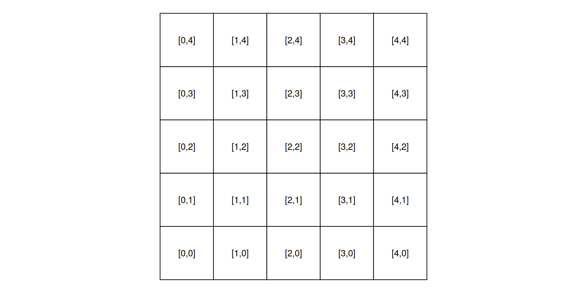
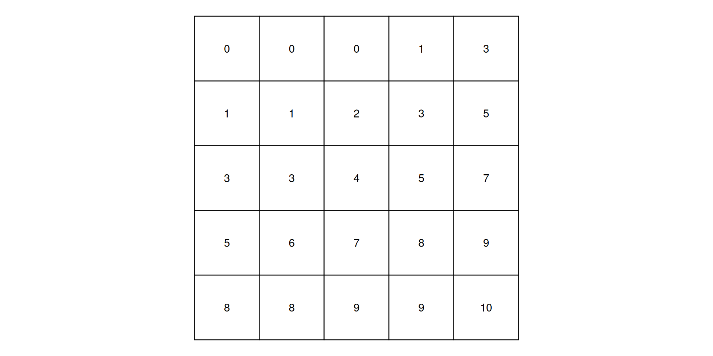
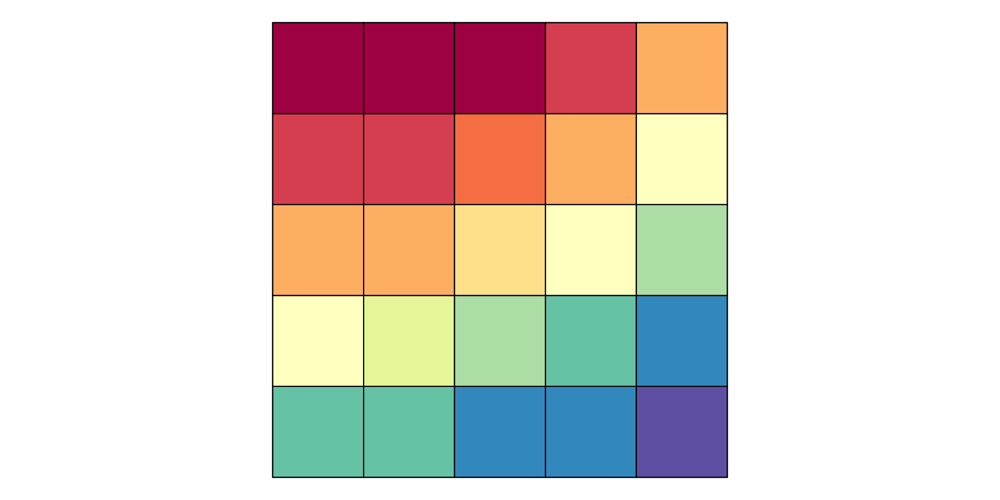
Types of raster data
- Raster datasets usually represent continuous phenomena such as elevation, temperature, population density or spectral data.
- Discrete features such as soil or land-cover classes can also be represented in the raster data model
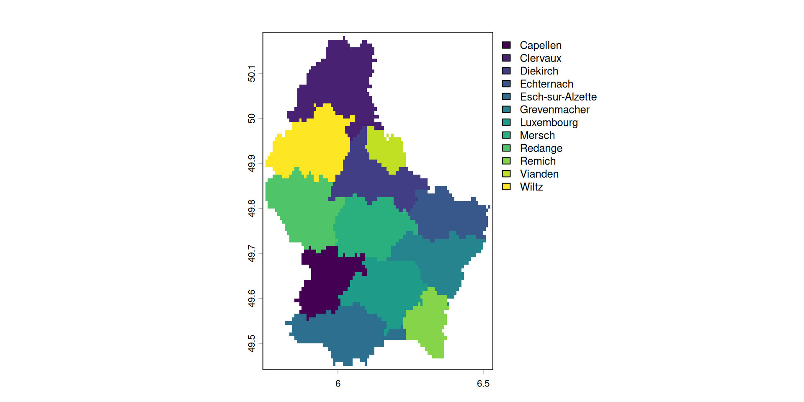
A simple example: Elevation
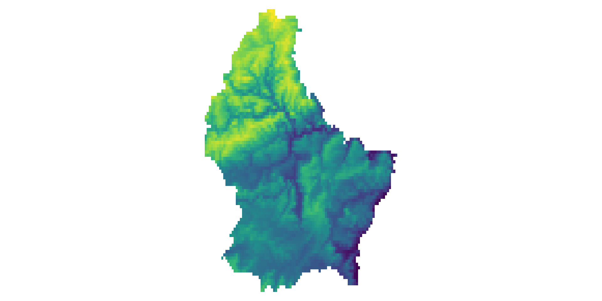
[,1] [,2] [,3] [,4] [,5] [,6]
[1,] 275 282 373 342 357 326
[2,] 230 318 316 351 345 346
[3,] 164 337 258 342 363 350
[4,] 168 337 261 354 358 364
[5,] 202 322 250 380 362 373
[6,] NA 310 270 361 370 363
[7,] NA 277 310 291 375 365
[8,] NA 181 325 264 381 373
[9,] NA NA 313 264 370 384
[10,] NA NA 298 285 370 380
[11,] 402 NA 333 293 356 382A more complex example: Spectral data
- Typically, RS imagery consists of more than 1 band
- In this case, the data is stored in a 3 dimensional array (where band is the 3rd-dimension)
- A RS image can contain any number of bands.
- The most well known type of RS imagery consists of 3 Bands from the red, blue and green spectrum
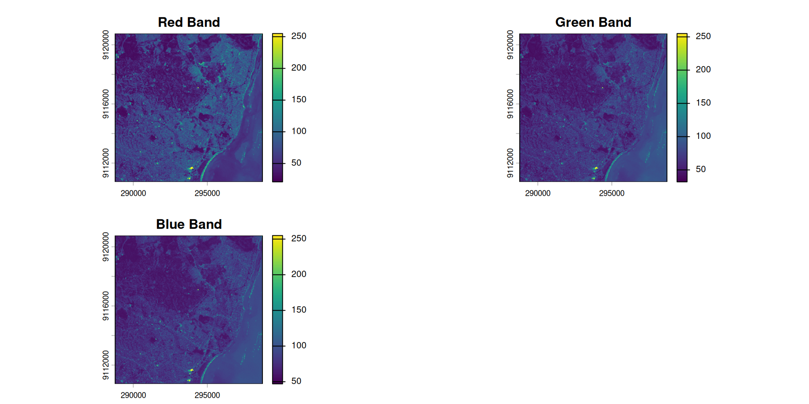

Each band is a 2D matrix
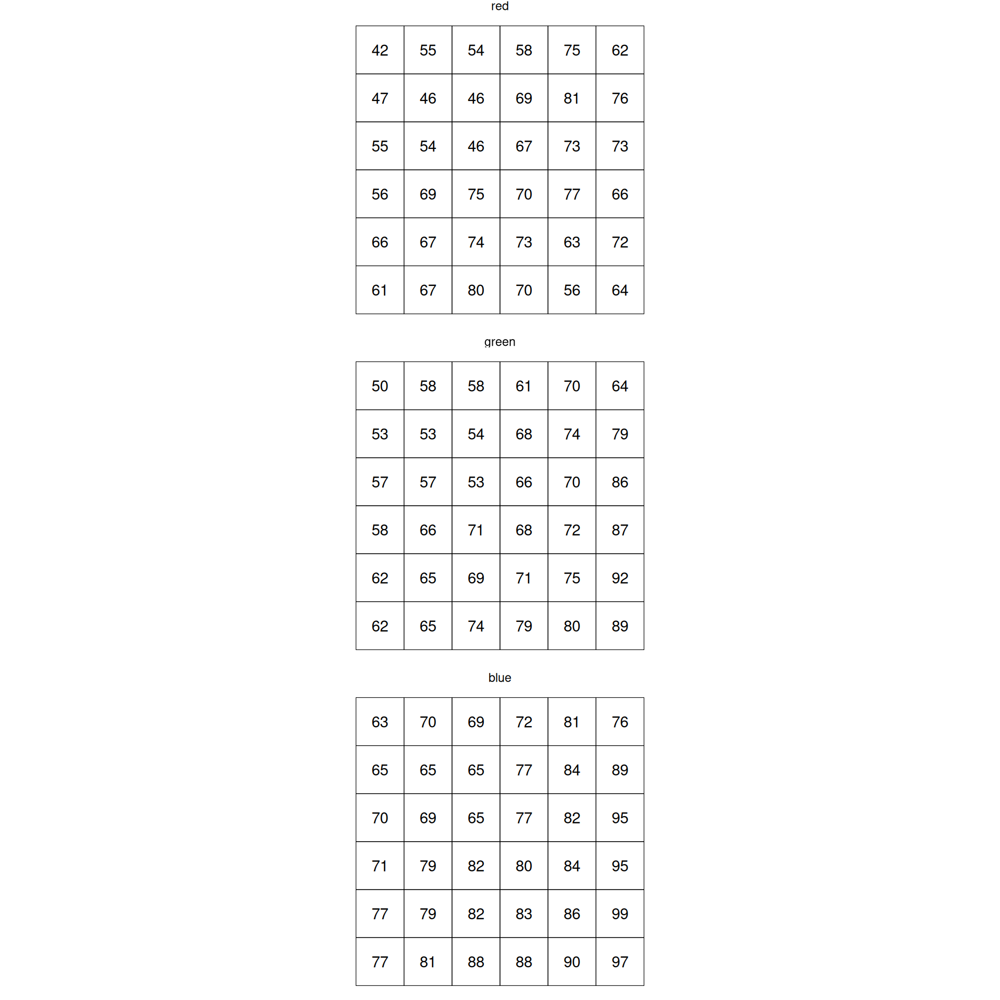
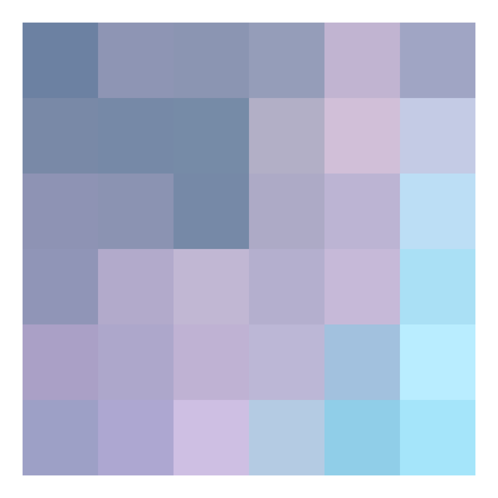
Multispectral Datasets
- Multiband datasets usually capture different parts of the EM spectrum
- E.g. the Landsat image from the previous example has 6 bands capturing the following wavelengths:
- Band 1: Blue (0.45 - 0.52 µm)
- Band 2: Green (0.52 - 0.60 µm)
- Band 3: Red (0.63 - 0.69 µm)
- Band 4: Near-Infrared (0.77 - 0.90 µm)
- Band 5: Short-wave Infrared (1.55 - 1.75 µm)
- Band 7: Mid-Infrared (2.08 - 2.35 µm)
NirGB Image
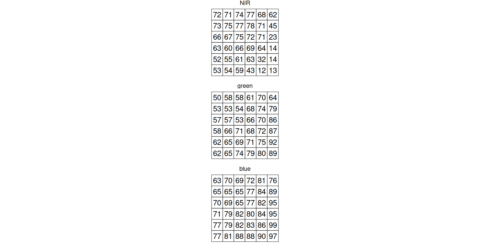
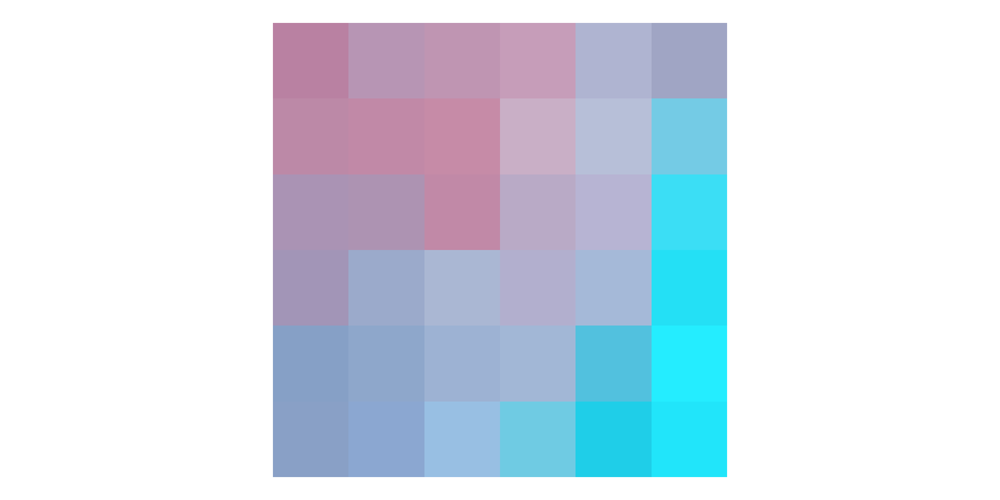
Representations of multispectral data
- A true color image is created by using the Red (3), Green (2) and Blue (1) Band and mapping these to RGB
- A false color image is created by mapping other bands to RGB
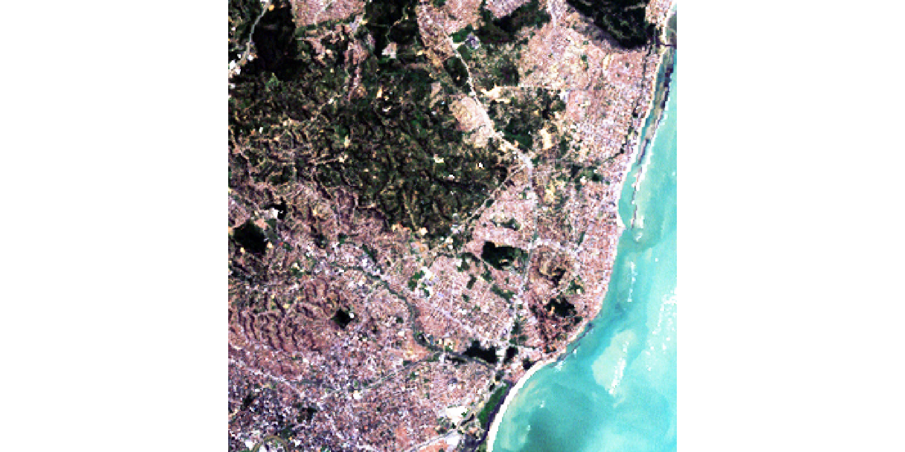
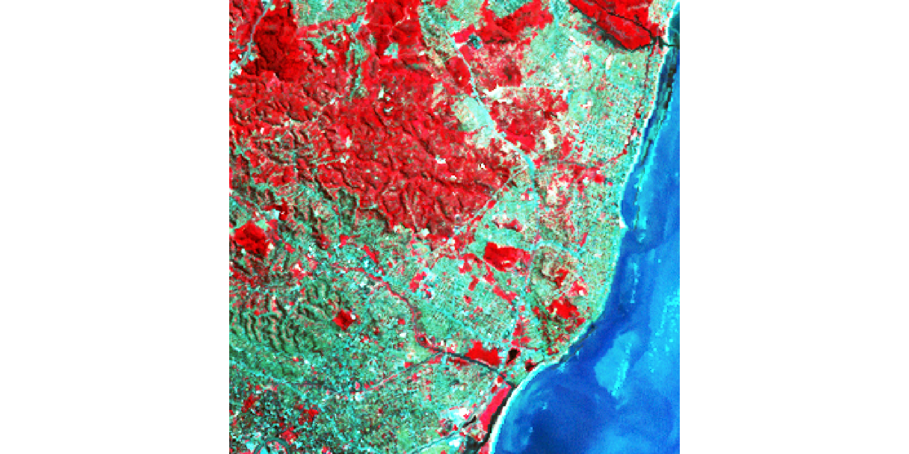
The SpatRaster Object
What makes a matrix a raster?
- We established that a raster is a matrix of values
- But a plain matrix has no spatial meaning — it does not know where on Earth it is
- A SpatRaster (
terra) extends a matrix with three pieces of spatial metadata:- Extent: the geographic bounding box (xmin, xmax, ymin, ymax)
- Resolution: the size of one pixel in CRS units
- CRS: the coordinate reference system — the spatial reference frame
- Together, extent + resolution + CRS allow every pixel to be located precisely on Earth
Printing a SpatRaster shows all metadata
class : SpatRaster
size : 90, 95, 1 (nrow, ncol, nlyr)
resolution : 0.008333333, 0.008333333 (x, y)
extent : 5.741667, 6.533333, 49.44167, 50.19167 (xmin, xmax, ymin, ymax)
coord. ref. : lon/lat WGS 84 (EPSG:4326)
source : elev.tif
name : elevation
min value : 141
max value : 547Querying individual components
[1] 90[1] 95[1] 1Coordinate Reference Systems
What is a CRS?
- A CRS defines how coordinates relate to real locations on Earth
- Two broad families:
- Geographic CRS — coordinates in degrees (longitude, latitude) on a spherical Earth model Example: WGS84 (EPSG:4326), used by GPS
- Projected CRS — coordinates in meters (or feet) on a flat (2D) surface Example: EPSG:2169 (Luxembourg), UTM zones
- Most downloaded satellite data uses WGS84; spatial analysis often requires a projected CRS
Checking the CRS
Reprojecting with project()
- Use
project()to reproject a raster to a different CRS - The raster is resampled so that pixels align to the new grid
Why CRS matters for analysis
Geographic (degrees)
- Resolution of
0.00833° - A focal window of 3 cells ≈ 0.025°
- Pixel “size” varies with latitude
Projected (meters)
- Resolution of
~927m - A focal window of 3 cells = 2.8 km
- Pixel size is constant everywhere
NoData in Raster Data
What does NA mean in a raster?
- In tabular data,
NAmeans “value not recorded” for an observation - In raster data,
NAhas additional spatial meaning:- Outside the study area — pixels beyond the boundary of interest
- Other, such as Sensor failure, Atmospheric effects etc.
- NA pixels are not skipped in raster algebra — they propagate:
5 + NA = NA
How NAs arise: study area boundaries
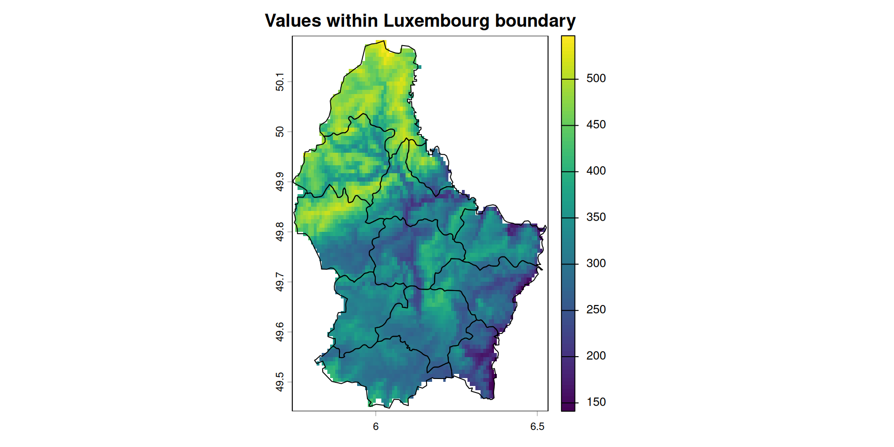
Working with NA: is.na() and mask()
Edge effects in focal operations
- Focal operations require a neighborhood around each cell
- Cells at the raster edge do not have a full neighborhood
- By default, this produces NA in the output border
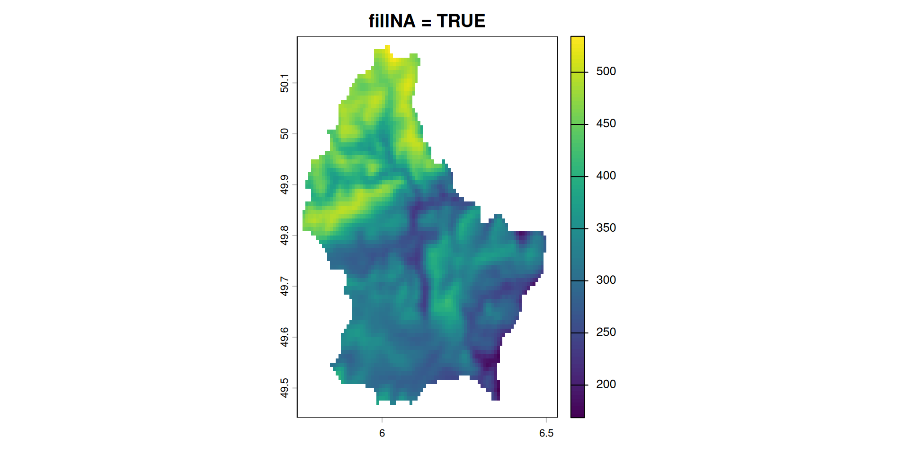
Reading and Writing Rasters
Common raster file formatsCommon raster
| Format | Extension | Notes |
|---|---|---|
| GeoTIFF | .tif |
Universal standard; stores CRS, extent, metadata |
| JPEG2000 | .jp2 |
Used by Sentinel-2 (ESA); lossy or lossless |
| NetCDF | .nc |
Common in climate science; supports time dimension |
| HDF5 | .h5 / .he5 |
Used by MODIS, Landsat Collection 2 |
| Cloud-Optimized GeoTIFF | .tif (COG) |
GeoTIFF optimized for remote/cloud access |
Reading rasters from disk
rast()reads all spatial metadata automatically (CRS, extent, resolution)- The data is not loaded into RAM by default —
terrareads values on demand (lazy loading) - Use
values(r)oras.matrix(r)to force loading all values into memory
Writing rasters to disk
# write to GeoTIFF (all metadata is preserved automatically)
writeRaster(r, "data-out/elevation_out.tif")
# overwrite an existing file
writeRaster(r, "data-out/elevation_out.tif", overwrite = TRUE)
# specify the data type explicitly (default is Float32)
writeRaster(r, "data-out/elevation_byte.tif", datatype = "INT1U", overwrite = TRUE)- CRS, extent, resolution, band names and data type are all written into the file
- Any software that reads GeoTIFF (QGIS, Python/rasterio, ArcGIS) will read the same metadata
- Choosing the right
datatypematters for file size — covered in Lesson 3
Baltagi, Badi Hani, and Badi H Baltagi. 2008. Econometric Analysis of Panel Data. Vol. 4. Springer. https://bcs.wiley.com/he-bcs/Books?action=resource&bcsId=4338&itemId=1118672321&resourceId=13452.
Pebesma, Edzer, and Roger Bivand. 2023. Spatial Data Science: With Applications in R. Chapman; Hall/CRC. https://doi.org/10.1201/9780429459016.
Wickham, Hadley. 2014. “Tidy Data.” Journal of Statistical Software 59 (10): 1–23. https://doi.org/10.18637/jss.v059.i10.